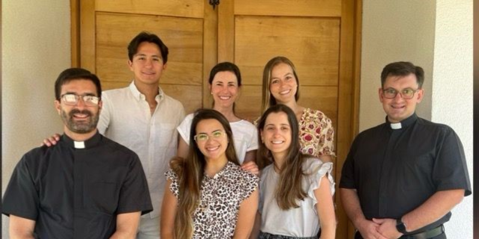
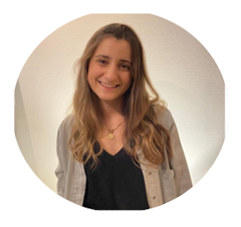

CONOCE AL EQUIPO DE LA PASTORAL
MARÍA JOSÉ SALAS KADADIHI
Asistente Direccional Pastoral
Encargada de los estudiantes
Identidad y Comunidad, Crecimiento Espiritual
Contacto: msalas@uft.cl

TRINIDAD PRADO VALDÉS
Asistente Direccional Pastoral
Encargada de los colaboradores y académicos: Apostolado
Identidad y Comunidad, Crecimiento Espiritual